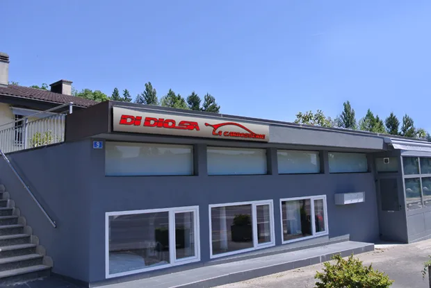
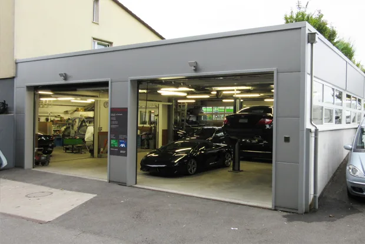
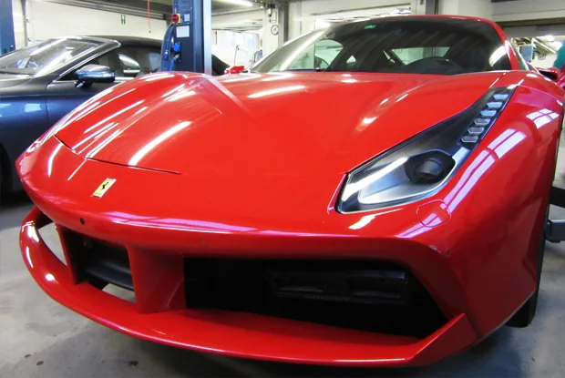
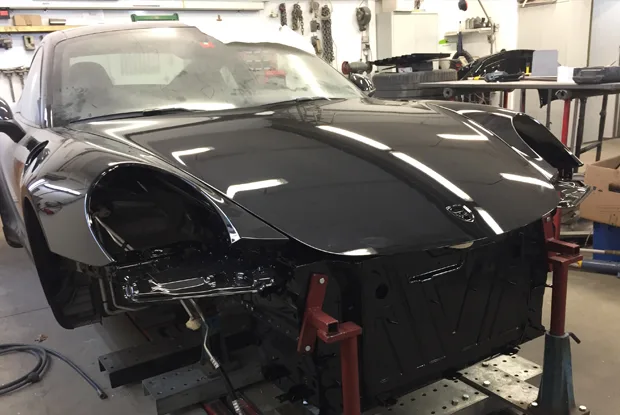
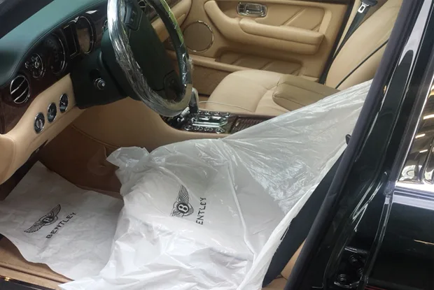

Votre voiture, de la couleur d’origine.
Un service « clé en main » rapide : nous redonnons à votre véhicule, endommagé ou accidenté, son aspect et sa couleur d’origine. Un travail de qualité depuis plus de 40 ans, à des prix compétitifs et dans le respect de l’environnement.

Route de Prilly 9, à Crissier.
L’atelier
Chaque savoir-faire de l’atelier, comme un échantillon du nuancier.
Carrosserie conventionnelle
Carrosserie aluminium
Réparation sur carrosserie en fibre
Pare-brise et autres vitrages
Remplacement.
Réparation alternative
Grêle et parking.
Marbres de mesure
Carben Seven et Lazer Dataliner.
Peinture à l’eau
Traitement écologique, et une teinte analysée au spectromètre avant d’être préparée.
Nous prenons soin de notre environnement et trions nos déchets.
- Peinture Axalta (Dupont)
- Peinture Glasurit BASF
- Analyse des peintures au spectromètre
Démarches d’assurance
Devis établi sur la base de calcul SILVER DATA AUTO-i, agréé par les assurances.
- Demande d’expertise avec le système « E-service »
- Déclaration de sinistre en votre présence
- Prise de rendez-vous pour le mandat d’expertise
- Entretien avec les experts d’assurances
- Facturation selon la décision des parties concernées
Garantie
Préservez l’intégralité de l’origine de votre véhicule.
Nos techniciens sont certifiés d’une formation professionnelle, avec les équipements et outillages spéciaux les plus modernes.
Toutes nos réparations sont effectuées avec des pièces d’origine constructeur, et tous nos travaux sont garantis. Expérience sur les grandes marques et les voitures d’exception.
Mobilité
Véhicules de remplacement dès CHF 50.– / jour, 100 km inclus. Véhicules écologiques également disponibles.
| Véhicule | CHF / jour |
|---|---|
| Mercedes Classe A | 50.– |
| Mercedes Classe B | 60.– |
| Mercedes Classe C | 80.– |
| Mercedes Classe E | 120.– |
| Mercedes Classe ML | 150.– |
Location de véhicules d’exception sur demande.
Service à la clientèle
- Pose de films teintés
- Nettoyage d’intérieurs
- Traitement des cuirs intérieurs
- Traitement téflon et divers
- Recherche de véhicule sur demande
À l’atelier




Agréments et partenaires
Tels que publiés sur le site actuel de la carrosserie.
Agréé par
Mercedes-Benz, Bentley, Porsche Club Suisse
Agréé par les assurances
AXA Winterthur, Vaudoise
Membre
FCR, Porsche Club Suisse, Lions Club
Partenaires : Garage Beau-Rivage (Lausanne), Garage Ferrari (Lausanne), Garage Mercedes (Lausanne), Garage Bentley (Lausanne), Garage Millet – Opel et SAAB (Crissier), Garage Da Luz – toutes marques (Crissier), Dépannage routier SDA (Crissier) et diverses entreprises internationales.
Passer à l’atelier
- Lundi–jeudi
- 7h30–12h · 13h30–18h
- Vendredi
- 7h30–12h · 13h30–16h30
- Samedi matin
- Sur rendez-vous
- Téléphone
- 021 634 57 42
- Natel
- 079 212 15 88
- Fax
- 021 634 57 82
- lacarrosserie@didiosa.ch